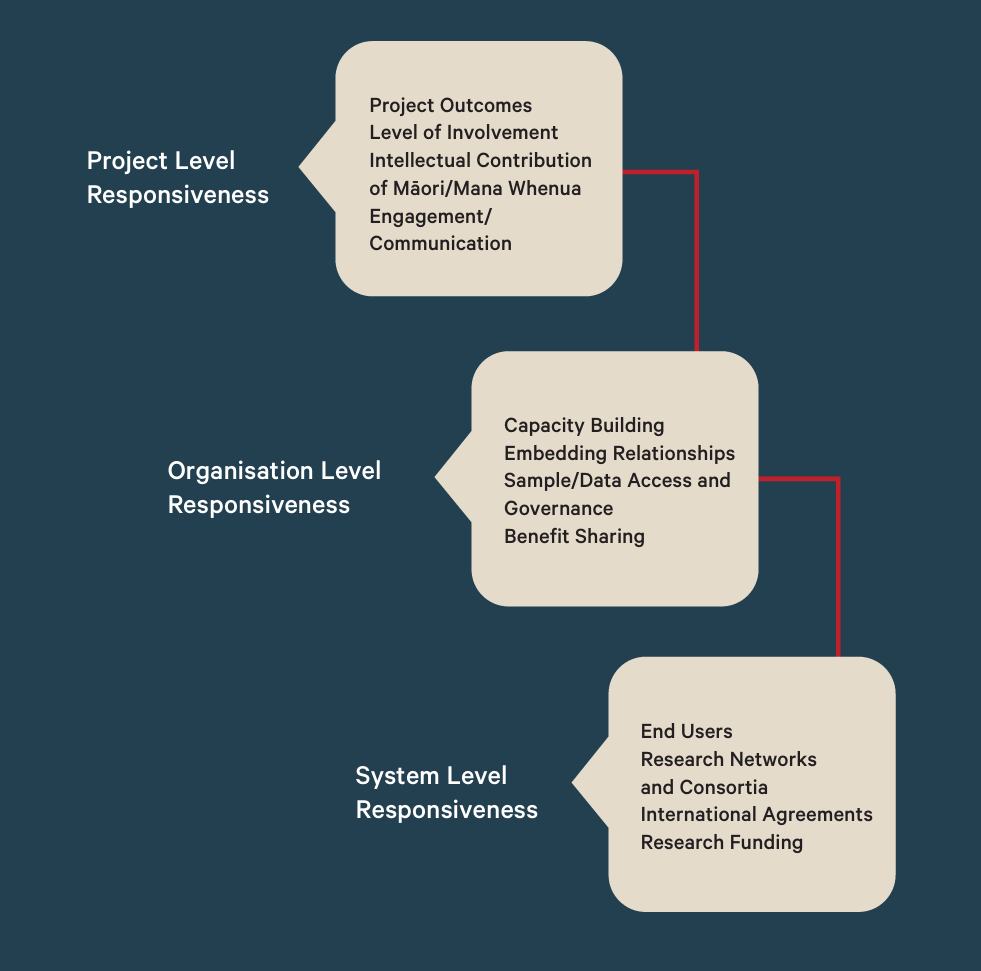
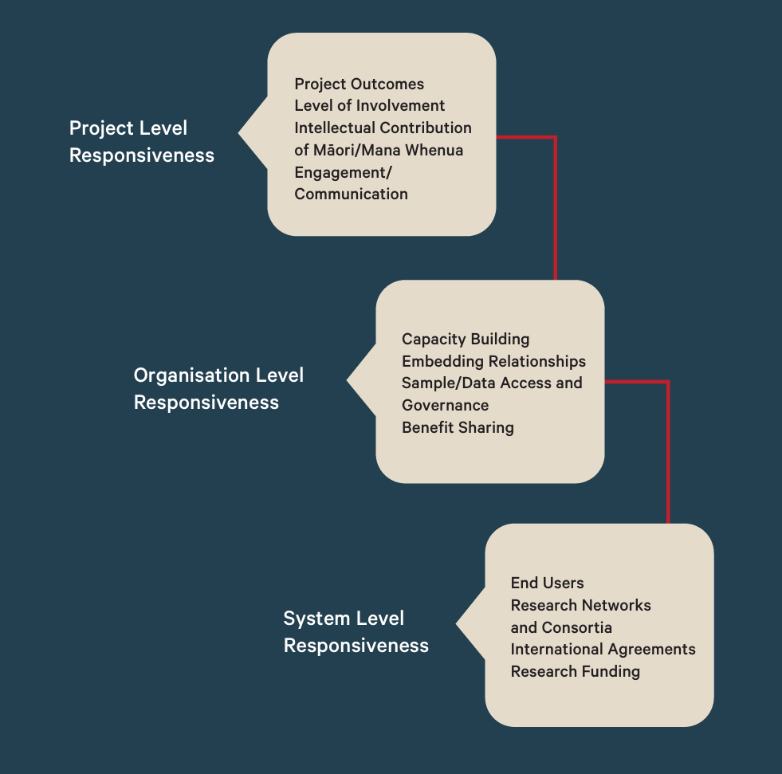
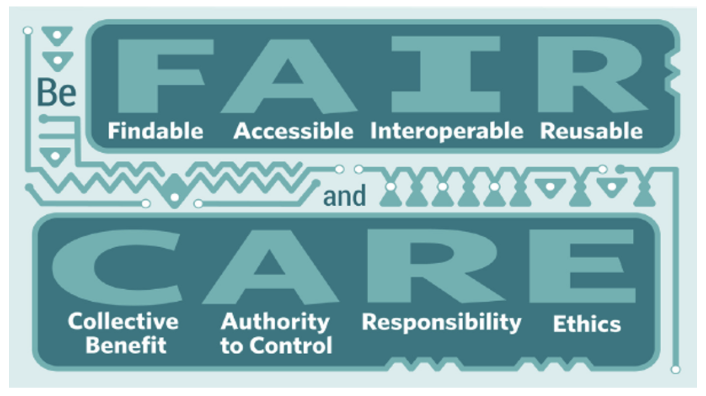

Before you begin: Ethical considerations
Before you even begin collecting your samples for genomic analyses, there are many ethical considerations to think about. In a broader, international context there are multiple, multi-party conventions and agreements towards the protecting the use of indigenous and endangered species or and their derived data. Here in Aotearoa New Zealand, we have additional responsibilities to Te Tiriti o Waitangi, including Māori consultation, recognition of taonga species, and considerations around Māori Data Sovereignty and Governance.
Data collection perspectives in Aotearoa
Many species in New Zealand are considered taonga, which are species of value to Māori, and this status extends to their ecosystems too. Genomic data collected from taonga species is considered an extension of the individual or species it was collected from and is part of their whakapapa. It is important to acknowledge and engage with Māori perspectives at each stage of collection, processing, analysis and sharing of genomic data to ensure the appropriate care and consultation has been undertaken.
Your University, Institute or Organisation will likely have its own policies, guidelines or frameworks on how to undertake consultation with Māori that you need to investigate for yourself.
Here we have a few resources to get you started with thinking about how to include Māori perspectives in your genomic research project:
Genomic research on Taonga species
Guidelines for Genomic Research on Taonga Species–Te Nohonga Kaitiaki (below-left). Effective engagement with Māori should be practised at all levels of research, as outlined by this engagement framework from pg 23 (below-right).
 

Māori Data Sovereignty
Te Mana Raraunga - the Māori Data Sovereignty Network advocates for Māori rights and interests in data and has several resources on their website on these principles. This is a broader description of engaging with data; not specific to genomic data.
Government policy
The Ministry of Business, Innovation and Employment (MBIE) outline their Vision Mātauranga policy for unlocking the science and innovation potential of Māori knowledge, resources and people. If you are writing government-funded or Royal Society funded grants, you’ll need to think about how to incorporate Vision Mātauranga in your research plan.
Further training
Training opportunities are available for indigenous peoples through the Summer internship for INdigenous peoples in Genomics (SING Aotearoa) and Indigidata Aotearoa wānanga.

International agreements, principles and protocols
FAIR and CARE
In 2016, the FAIR principles were published in Scientific Data. These guidelines set to provide a standard through which to improve digital assets:
- Findability
- Accessibility
- Interoperability
- Reuse
Part of conducting FAIR research is having a reproducible research pipeline. One way this can be done is by documenting your work on a version control system like GitHub. (See our GA workshop for more on Reproducibility with Git and Quarto).
Open science advocates have embraced this FAIR framework, while others critise its lack of protection of data, for not considering the rights and interest of those that should hold governance over data, in particular, indigenous peoples. In response to this, the CARE framework has also been proposed by Global Indigenous Data Analysis, to complement the existing FAIR principles:
- Collective benefit
- Authority to control
- Responsibility
- Ethics

This story “Open with care; Indigenous researchers and communities are reshaping how Western science thinks about data ownership” is an interesting read on these perspectives, and importantly how both sets of principles can be implemented together.
Nagoya protocol

The Nagoya Protocol on Access to Genetic Resources and the Fair and Equitable Sharing of Benefits Arising from their Utilization to the Convention on Biological Diversity is an international agreement which aims at sharing the benefits arising from the utilization of genetic resources in a fair and equitable way.
The Nagoya Protocol is a supplementary agreement to the Convention on Biological Diversity. It covers the fair and equitable sharing of benefits arising from the utilisation of genetic resources. New Zealand is not a signatory to the agreement due to the overriding importance of the Treaty of Waitangi in domestic affairs (source: Te Nohonga Kaitiaki).
CITES species

CITES is the Convention on International Trade in Endangered Species of Wild Fauna and Flora. It is an an international agreement between governments. Its aim is to ensure that international trade in specimens of wild animals and plants does not threaten the survival of the species.
Some species are therefore subject to certain controls for international trade and require specific authorisation to import, export, re-export or introduce.
You can search the species list on Species+.
NZ has not ratified or accepted CITES, and as such NZ’s status is ‘accession’ i.e., they have not signed the Convention.
DISCUSSION 💬
What ethical considerations do you need to take into account before you begin collecting your samples?
Have you ever worked on a project where consultation did not occur? What would you do differently if you could go back and repeat it?
???